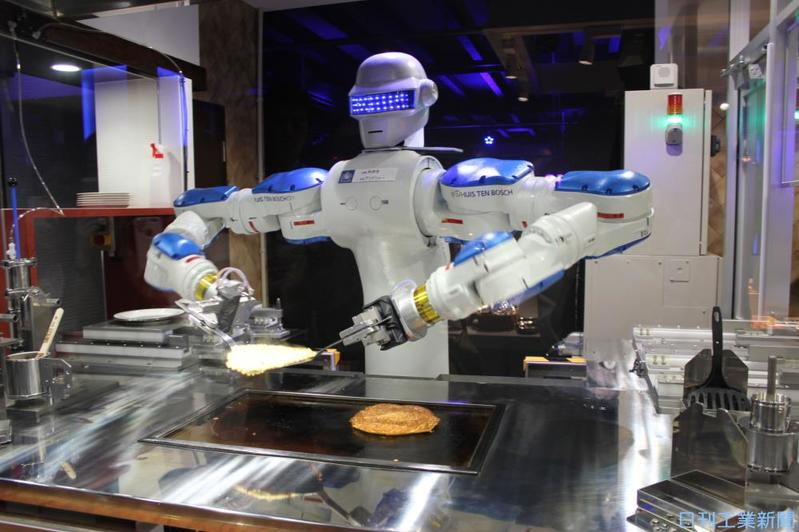

僕がこの岩手県立大学ソフトウェア情報学部を気になっている理由としては、この学部では今後ますます成長が期待されえているビッグデータやIoT、ドローン、AIなどの先端技術分野で新たなモノやサービスを研究・開発する人材育成を目的としている学部です この学部には4つのコースがあり「データ・数理科学」、「コンピュータ工学」、「人工知能」、「社会システムデザイン」とそれぞれの分野に特化したコースがあります。
僕はこの中でもコンピュータ工学コースに興味があり、このコースでIoT技術を使ったドローンやロボットの安全な活用方法を学びたいと考えています。また、 このコースの研究室で農業とIoTを関連付けて研究しているところがあるので その研究にとても興味を持ったというのもこの大学に入りたい理由の一つです。
